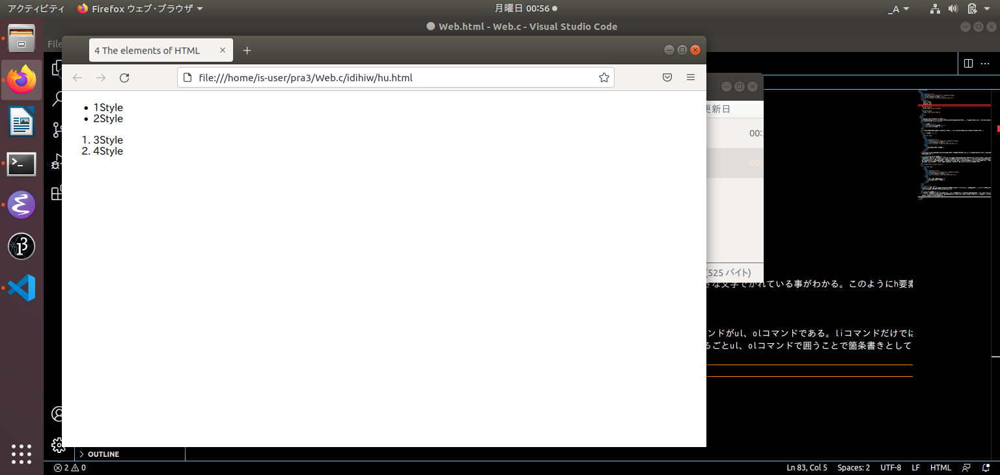

5420017 齊藤孝樹
このWebサイトでは日本大学文理学部情報科学科 Webプログラミングの演習課題の内容である3つのHTML要素について説明したものが書かれたものである。 私が選んだのは以下の3つとなっている。
p要素
h1,h2,h3,h4,h5,h6要素
ul,olおよびli要素
基本的な文章を書く上で大事な3つとなっているため、まずはこの3つから知っていくようにしよう。
p要素は基本的な文章を書くときに使うものである。実際私がこの文章を書いているのにもp要素を扱っております。p要素を用いて実際に次の コードを打つと文章が出力されることを確かめてみましょう。
上記のコードを入力してみると、”この文章が見えますか？”という実行結果が出るはずです。このように基本的な文章を書く際はp要素を用いて 書くのである。
h要素は見出しを作りたいときに使用するコマンドである。Webサイトのある地点から下の部分はどういったことが書かれているのかがわかりやすいように 用いらており、その中でもh1から順に小さくなっていく仕様になっている。そのためわざわざcssでフォントサイズを調整しなくても、見出しの中のサブの 見出しとしてh1の中にh2要素を書き込むことで楽にその見出しの中の内容を分割して説明することができる。ただし、大きさが決まっているため微調整した いのであればcssに書き込むこともできる。ではこれについても実際にコードを打ち込んでみよう。
上記の画像が実行した結果である。h1とh2の大きさが少し変わっており、またp要素で書かれたものよりも大きな文字でかれている事がわかる。このようにh要素を 用いることで見出しとして扱うことが可能となる。
li要素は箇条書きをするコマンドである。またその箇条書きをする際に左側に番号や点で書くために使うコマンドがul、olコマンドである。liコマンドだけでは ただただ改行して文字を書いているだけに過ぎず、とても見づらいものになってしまう。そのためli要素をまるごとul、olコマンドで囲うことで箇条書きとして 綺麗な形を表示することができる。
